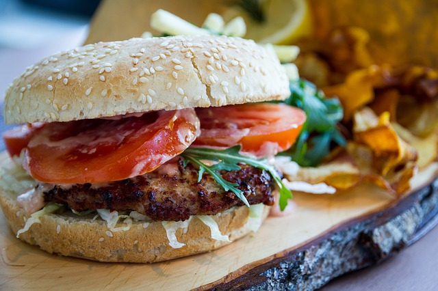

Homestyle Hearth and Heart
Doc's Kitchen brings you a weekly rotating lunch menu,
prepared in the same kitchen where she feeds her family of five.
Using only the freshest ingredients, each menu item is made-to-order while you wait!
Limited indoor seating available, take-out is encouraged!
Catering and Private Party Bookings - Nights and Weekends
Open daily, 11am - 2pm
*Image: Public Domain from Pixabay.